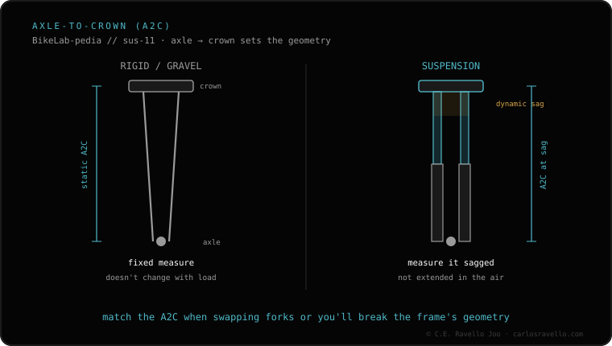

A fork fits when five specs match: 1) the wheel size (29 or 27.5 — they don't mix); 2) the steerer tube (today almost all tapered, 1.5" to 1+1/8"); 3) the axle (Boost 15x110 versus the old 15x100); 4) the travel within what the frame allows (usually ±10-20 mm from stock); and 5) the axle-to-crown close to stock so the geometry isn't altered. Before swapping a fork, also check the offset 44 vs 51 and, if you touch the rear, the shock sizing.
It's not enough that it's "a mountain fork". These five specs are what decide whether it fits and whether the geometry stays the one the brand designed.
1 · Wheel size. A 29 fork takes a 29 wheel and a 27.5 fork takes 27.5. They don't mix: running the wrong wheel changes the front end height and pushes the geometry out of spec.
2 · Steerer tube. Today almost everything is tapered: 1.5" at the bottom and 1+1/8" at the top. The fork's steerer and the frame's head tube must be the same standard; if they don't match, it won't seat.
3 · Axle. Boost 15x110 is the modern standard; the old one is 15x100. It's the width and diameter of the front axle: your wheel's hub and the fork have to speak the same language.
4 · Travel. You can move within what the frame allows, usually ±10-20 mm from the stock travel. Going beyond that lifts the front end too much and changes the behaviour.
5 · Axle-to-crown. It's the distance from the axle to the crown. Keeping it close to stock preserves the head angle and the front end height; straying far alters the geometry even if everything else fits.

Once you know the fork fits, the next spec that changes behaviour is the offset 44 vs 51, which affects trail and steering. And if you're going to touch the rear suspension, measure the shock sizing (eye-to-eye and stroke) carefully before buying.
Send us your bike model and the fork you're eyeing and we'll tell you if it matches on all five specs. Message us on WhatsApp
On five specs: wheel size (29 or 27.5), steerer tube (tapered), axle (Boost 15x110 vs 15x100), travel allowed by the frame and axle-to-crown close to stock.
Within what the frame allows, usually ±10-20 mm from stock. Adding travel raises the axle-to-crown and changes the geometry.
The distance from the wheel axle to the base of the crown. If it differs much from stock, it changes the head angle and the front end height.
© 2026 BikeLab Studio. Content under CC BY 4.0: you may copy, translate and publish it, even for commercial purposes. Citation is mandatory. Without attribution, the license terminates automatically (CC BY 4.0, §6.a) and the use becomes copyright infringement: we request the removal of the content and its deindexing. · Design and ownership: Carlos Ravello Joo